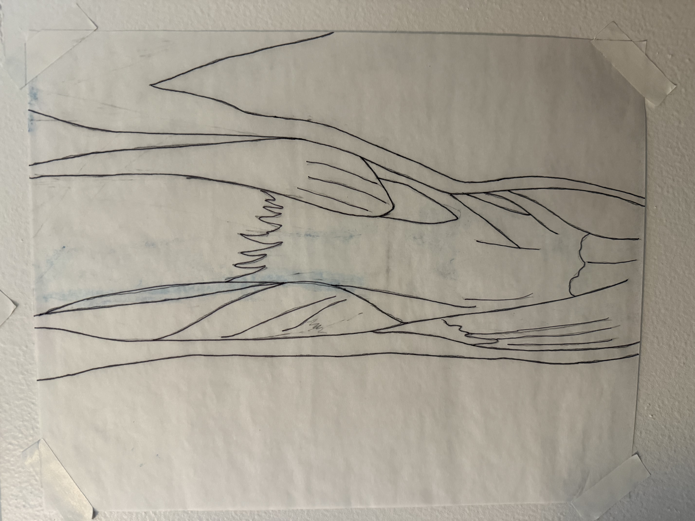

Residue
Process fragment
Surface marks, corrections, and erasure textures. Residue documents the process of revision and refinement.
Study Collection

Residue Study 01: Search Lines

Residue Study 02: Corrected Proportions

Residue Study 03: Layered Marks

Residue Study 04: Process Notes

Residue Study 05: Traced Corrections

Residue Study 06: Revised Anatomy